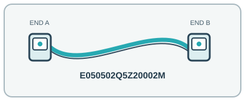

[ INDIVIDUAL COMPONENT // OPTICAL FIBER PATCH CORD ]
Corning E050502Q5Z20002M OM4 LC Duplex Low-Loss Patch Cord
A low-loss 2 m Corning OM4 multimode cord with duplex LC ends for matched short-reach optical links.

IDENTIFICATION: Exact manufacturer model/SKU: Corning E050502Q5Z20002M. Connector fit alone does not establish electrical, optical, protocol or platform compatibility.
Product specifications
| Manufacturer model / SKU | Corning E050502Q5Z20002M |
|---|---|
| Product type | OPTICAL FIBER PATCH CORD |
| Connector/end types | LC duplex PC-polish connectors at both ends; two-fiber A/B assembly. |
| Fiber grade / Ethernet category | OM4 ClearCurve multimode, 50 µm core; tight-buffered zipcord. |
| Length | 2 m. |
| Bend radius and shielding | 2.0 mm legs, LSZH/FRNC jacket, dielectric/non-metallic fiber assembly (no EMI shield). Minimum bend radius: 10 mm as shown in the Corning product specification. |
| Speed / distance limits | Duplex OM4 supports 10GBASE-SR to 400 m on a compliant 850 nm channel; actual end-to-end reach is limited by transceiver and channel loss. LC duplex does not directly terminate parallel MPO SR4 links. 400 m is the OM4 10GBASE-SR maximum for the fully compliant link; the patch cord is only one part of that channel. |
| Compatibility | LC duplex PC/UPC-compatible multimode ports; match OM4 grade, polarity and optical wavelength at both ends. Do not connect to APC-polished or single-mode ports. |
Compatibility and handling
LC duplex PC/UPC-compatible multimode ports; match OM4 grade, polarity and optical wavelength at both ends. Do not connect to APC-polished or single-mode ports.
Bend-radius note: Minimum bend radius: 10 mm (Corning product data). Avoid exceeding the assembly’s tensile/crush limits.
Shielding / jacket: Dielectric optical fiber with LSZH/FRNC outer jacket; not electrically shielded.
Inspect the jacket, strain relief, latch and end faces before use. For optical assemblies, keep dust caps in place and never look into a live fiber. For copper/active-end assemblies, avoid tight bends and cable crushing; validate PoE and device compatibility from the relevant port documentation.
Manufacturer sources and technical references
- Corning — E050502Q5Z20002M product recordExact model identity, connectors, grade, length and construction.
- Corning — E050502Q5Z20002M product specification sheetManufacturer specification including bend radius and optical/mechanical limits.
- Corning — 40/100G multimode fiber connectivityManufacturer guidance for multimode link reach and topology.
Manufacturer sources are HTTPS. Limits quoted here are link/application limits: the installed cable channel, transceivers, connectors, port support and installation quality determine actual service. Confirm model revision and regional documentation before deployment.